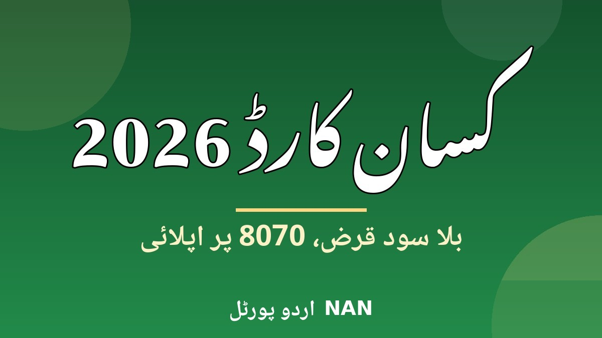

کسان کارڈ 2026: بلا سود قرض، اہلیت اور 8070 پر اپلائی کا مکمل طریقہ

بوائی کے وقت ہر کسان کے سامنے ایک ہی سوال ہوتا ہے — بیج، کھاد اور دوا کے پیسے کہاں سے آئیں گے؟ پنجاب حکومت کا کسان کارڈ اسی کا حل ہے: اس سے کسان فصل کے لیے بلا سود قرض لے سکتے ہیں، یعنی جتنی رقم لیں گے اتنی ہی واپس کرنی ہوگی — کوئی مارک اپ، کوئی سود نہیں۔ اس مضمون میں کسان کارڈ کی رقم، اہلیت، 8070 پر اپلائی کا طریقہ، کارڈ وصولی، استعمال اور واپسی کا پورا طریقہ قدم بہ قدم بتایا گیا ہے۔
1۔ کسان کارڈ کیا ہے؟
کسان کارڈ وزیراعلیٰ پنجاب کی ڈیجیٹل اسکیم ہے جو محکمہ زراعت پنجاب، بینک آف پنجاب، پنجاب لینڈ ریکارڈ اتھارٹی (PLRA)، نادرا اور پنجاب انفارمیشن ٹیکنالوجی بورڈ (PITB) کے اشتراک سے چل رہی ہے۔ یہ اے ٹی ایم کارڈ کی طرح کام کرنے والا سمارٹ کارڈ ہے — اس پر منظور شدہ قرض آتا ہے اور کسان اس سے صرف زرعی سامان خرید سکتا ہے۔ یہ اسکیم 2024 میں شروع ہوئی اور اس کا ہدف پانچ لاکھ کسانوں تک پہنچنا ہے۔ کارڈ ہر فصل کے سیزن کے لیے جاری ہوتا ہے۔
2۔ قرض کی رقم کتنی ملتی ہے؟
قرض کی رقم زمین کے رقبے کے حساب سے ملتی ہے — فی ایکڑ 30,000 روپے تک۔ پہلے مرحلوں میں ایک سیزن میں زیادہ سے زیادہ 1,50,000 روپے (پانچ ایکڑ تک) ملتے تھے، بعد کے مرحلے میں یہ حد بڑھا کر 3,00,000 روپے فی سیزن کر دی گئی۔ اکتوبر 2026 میں گندم کے سیزن کے لیے ڈی اے پی کھاد پر فی ایکڑ حد 30,000 سے بڑھا کر 33,500 روپے کرنے کا بھی اعلان ہوا۔ ہر مرحلے میں حدیں بدلتی رہتی ہیں، اس لیے اپلائی سے پہلے محکمہ زراعت کی ویب سائٹ یا ہیلپ لائن سے موجودہ سیزن کی حد ضرور جان لیں۔ قرض ایک فصل کے سیزن، یعنی تقریباً چھ ماہ، میں واپس کرنا ہوتا ہے۔
3۔ اہلیت کی شرائط — کون اپلائی کر سکتا ہے؟
- پنجاب کا مستقل رہائشی ہونا ضروری ہے، اور شناختی کارڈ درست اور کارآمد ہو۔
- ایک سے ساڑھے بارہ ایکڑ تک زرعی زمین آپ کے نام ہو، اور اس کا ریکارڈ پنجاب لینڈ ریکارڈ اتھارٹی (PLRA) کے نظام میں درج ہو۔
- موبائل سم آپ کے اپنے شناختی کارڈ پر رجسٹرڈ ہو — کسی رشتہ دار کی سم سے اپلائی نہیں ہوگا۔
- بینک ڈیفالٹر نہ ہوں — اگر آپ کا نام کسی بینک کے نادہندگان میں ہے تو درخواست مسترد ہو سکتی ہے۔
- زمین کا ریکارڈ درست ہونا چاہیے — اگر فرد یا انتقال میں غلطی ہو تو پہلے لینڈ ریکارڈ سینٹر سے درست کروائیں، ورنہ تصدیق رک جائے گی۔
4۔ 8070 پر اپلائی کا طریقہ — قدم بہ قدم
کسان کارڈ کی رجسٹریشن کا طریقہ بہت آسان رکھا گیا ہے — آپ کو کسی دفتر کے چکر لگانے کی ضرورت نہیں، صرف ایک ایس ایم ایس کافی ہے:
- پہلا قدم: وہی موبائل استعمال کریں جس کی سم آپ کے اپنے شناختی کارڈ پر رجسٹرڈ ہے۔
- دوسرا قدم: میسج میں لکھیں PKC، پھر ایک خالی جگہ، پھر اپنا 13 ہندسوں والا شناختی کارڈ نمبر بغیر ڈیش کے۔ مثال: PKC 3520212345671
- تیسرا قدم: یہ میسج 8070 پر بھیج دیں۔
- چوتھا قدم: آپ کو جوابی ایس ایم ایس ملے گا جس میں بتایا جائے گا کہ آپ اہل ہیں یا نہیں، اور اگلے مراحل کی ہدایت دی جائے گی۔
یاد رکھیں: رجسٹریشن مفت ہے — 2025 میں ایک ہزار روپے کی پروسیسنگ فیس بھی ختم کر دی گئی تھی۔ اگر کوئی شخص کارڈ بنوانے کے نام پر آپ سے پیسے مانگے تو وہ فراڈ ہے، فوراً انکار کر دیں۔
5۔ تصدیق اور کارڈ وصولی
ایس ایم ایس کے بعد آپ کی جانچ پڑتال شروع ہو جاتی ہے: نادرا شناختی کارڈ، PLRA زمین کا ریکارڈ اور بینک آپ کی کریڈٹ ہسٹری چیک کرتا ہے۔ سب کچھ درست ہو تو اطلاع ملتی ہے کہ کارڈ تیار ہے۔ پھر قریبی بینک آف پنجاب کی شاخ جا کر بائیومیٹرک تصدیق (انگوٹھے کا نشان) کروائیں — کارڈ مل جائے گا اور فعال ہوتے ہی اس پر آپ کے سیزن کی قرض کی حد دستیاب ہو جائے گی۔
6۔ کارڈ کہاں اور کیسے استعمال کریں؟
یہ رقم صرف منظور شدہ زرعی سامان — بیج، کھاد اور زرعی ادویات — کے لیے ہے، اور صرف رجسٹرڈ ڈیلرز سے خریدی جا سکتی ہے۔ کارڈ سے نقد رقم نہیں نکالی جا سکتی اور نہ اسے گھر کے خرچ میں استعمال کیا جا سکتا ہے۔ خریداری کے وقت ڈیلر کارڈ چیک کر کے رقم براہِ راست وصول کرتا ہے، اس لیے پہلے یقینی بنائیں کہ دکان محکمہ زراعت کی رجسٹرڈ دکان ہے، ورنہ ادائیگی نہیں ہوگی۔
7۔ قرض کی واپسی کیسے کریں؟
قرض کی رقم فصل کے سیزن کے اندر، یعنی تقریباً چھ ماہ میں واپس کرنی ہوتی ہے — کارڈ کی میعاد چھ ماہ ہے اور اس کے بعد ایک ماہ کی مہلت بھی ملتی ہے۔ وقت پر واپسی کرنے والوں کو اگلے سیزن میں دوبارہ کارڈ آسانی سے ملتا ہے، اور حکومت نے وقت پر واپسی کرنے والوں کے لیے انعامی قرعہ اندازی بھی کی ہے۔ دیر سے واپسی پر اگلے سیزن کی سہولت سے محروم ہو سکتے ہیں، اس لیے فصل بیچتے ہی واپسی کی منصوبہ بندی کر لیں۔
8۔ بیلنس اور اسٹیٹس کیسے چیک کریں؟
- بینک آف پنجاب کی شاخ: اپنا شناختی کارڈ دکھا کر کسی بھی شاخ سے کارڈ کا بیلنس اور اسٹیٹس معلوم کر سکتے ہیں۔
- سرکاری ویب سائٹس: محکمہ زراعت کی ویب سائٹ agripunjab.gov.pk اور kisan.punjab.gov.pk پر فہرستیں اور معلومات شائع کی جاتی ہیں۔
- ہیلپ لائن: محکمہ زراعت کی ہیلپ لائن 0800-17000 پر کال کر کے رجسٹریشن اور حد کے بارے میں پوچھ سکتے ہیں؛ کارڈ کی فعال سازی کے لیے بینک آف پنجاب کی ہیلپ لائن 042-111-333-267 بھی دستیاب ہے۔
9۔ عام مسائل اور ان کا حل
مسئلہ: 8070 پر میسج بھیجا، جواب نہیں آیا۔
حل: پہلے چیک کریں کہ سم آپ کے اپنے شناختی کارڈ پر ہے یا نہیں، اور میسج میں PKC کے بعد ایک ہی خالی جگہ اور درست 13 ہندسوں کا نمبر لکھا تھا یا نہیں۔ کچھ دیر انتظار کریں، پھر دوبارہ بھیجیں — اگر پھر بھی جواب نہ آئے تو محکمہ زراعت کی ہیلپ لائن 0800-17000 پر رابطہ کریں۔
مسئلہ: زمین کا ریکارڈ نہیں مل رہا۔
حل: اپنے ضلع کے لینڈ ریکارڈ سینٹر (اراضی سینٹر) سے فردِ ملکیت چیک کروائیں۔ اگر زمین مشترکہ کھاتے میں ہے یا وراثت کا انتقال نہیں ہوا تو پہلے وہ معاملہ حل کروائیں۔
مسئلہ: درخواست مسترد ہو گئی۔
حل: ہیلپ لائن سے مستردگی کی وجہ پوچھیں — عام وجوہات غلط زمینی ریکارڈ، دوسرے کے نام کی سم یا بینک ڈیفالٹ ہیں۔ وجہ درست کر کے اگلے سیزن میں دوبارہ اپلائی کیا جا سکتا ہے۔
10۔ کسان کارڈ اور لائیوسٹاک کارڈ میں فرق
بہت سے لوگ ان دونوں کو ایک سمجھ لیتے ہیں، حالانکہ یہ الگ اسکیمیں ہیں۔ کسان کارڈ فصل کے لیے ہے — بیج، کھاد اور دوا کی خریداری کے لیے، رجسٹریشن 8070 پر PKC لکھ کر ہوتی ہے۔ لائیوسٹاک کارڈ مویشیوں کے لیے ہے — جانوروں کی خوراک اور دیکھ بھال کے لیے، اور اس کا طریقہ کار الگ ہے۔ اپلائی سے پہلے یقینی بنائیں کہ آپ درست کارڈ کے لیے درخواست دے رہے ہیں۔
11۔ اکثر پوچھے جانے والے سوالات
سوال: کیا کسان کارڈ پر واقعی کوئی سود نہیں؟
جواب: جی ہاں — اس اسکیم کا قرض بلا سود ہے، یعنی آپ جتنی رقم استعمال کریں گے، اتنی ہی واپس کریں گے۔ یہی اس کی سب سے بڑی خصوصیت ہے۔
سوال: کیا کرائے دار کسان بھی اپلائی کر سکتے ہیں؟
جواب: نہیں — اسکیم زمین کے مالکان کے لیے ہے، کیونکہ اہلیت کی بنیاد PLRA میں درج زمین کا ریکارڈ ہے۔ کرائے پر زمین لینے والے کسان اس اسکیم کے اہل نہیں۔
سوال: کارڈ گم ہو جائے تو کیا کریں؟
جواب: فوراً بینک آف پنجاب کی ہیلپ لائن یا قریبی شاخ پر اطلاع دیں تاکہ کارڈ بلاک ہو جائے، پھر نیا کارڈ جاری کروانے کا طریقہ پوچھیں۔
سوال: کیا قرض کی رقم سے ٹریکٹر یا مشینری خریدی جا سکتی ہے؟
جواب: نہیں — یہ رقم صرف فصل کے سامان (بیج، کھاد، دوا) کے لیے ہے۔ ٹریکٹر کے لیے الگ گرین ٹریکٹر اسکیم موجود ہے، جس میں 10 لاکھ روپے تک سبسڈی ملتی ہے۔
کسان کارڈ چھوٹے کسانوں کے لیے فصل کی لاگت کا بوجھ کم کرنے کا اچھا ذریعہ ہے، بشرطیکہ اسے درست طریقے سے استعمال کیا جائے۔ آج ہی اپنا زمینی ریکارڈ چیک کریں اور 8070 پر میسج بھیج کر اپلائی کریں — اور یہ معلومات اپنے گاؤں کے دوسرے کسانوں تک بھی پہنچائیں، تاکہ کوئی مستحق کسان اس سہولت سے محروم نہ رہے۔